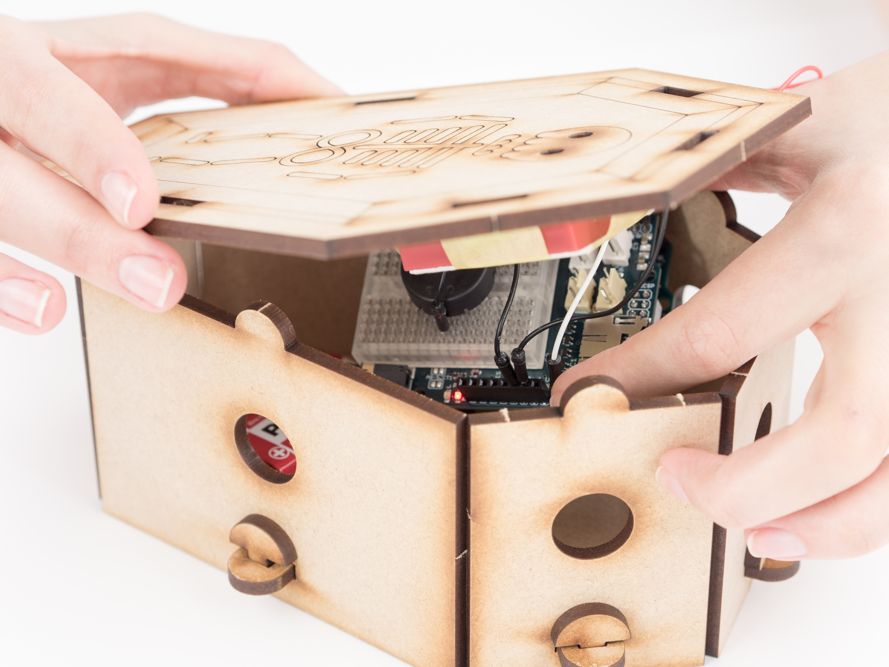

https://ctc101.arduino.cc/ctc101/module/module-3
Aprende sobre la magia de las señales analógicas y el puerto serie. Vas a construir proyectos que emplean señales analógicas, sonidos e imágenes.
https://ctc101.arduino.cc/ctc101/module/module-3
Aprende sobre la magia de las señales analógicas y el puerto serie. Vas a construir proyectos que emplean señales analógicas, sonidos e imágenes.
Como has aprendido anteriormente, las señales digitales solo tienen dos estados opuestos: 1 ó 0. Si pulsas y sueltas un botón, su estado cambiará de uno a otro. Un LED está encendido o apagado.
El mundo real sin embargo, no es digital. El agua por ejemplo, no sólo está caliente o fría, puede también estar templada. Para poder medir eso, y otras cosas del mundo real, no podemos usar sólo señales digitales. En lugar de ello, empleamos señales analógicas.
En vez de 2 estados opuestos, las señales analógicas tienen niveles continuos. Así que si tienes un sensor de luz, puedes obtener muchos valores diferentes que expresan cómo de iluminada está la habitación, y no sólo clara/oscura. O en el caso de un termómetro, te dice la temperatura mediante un número, en lugar de fría/caliente.
En tu placa controladora, puedes obtener los valores analógicos de los pines analógicos. Sobre la placa puedes ver un grupo de pines marcados como ANALOG IN, que llevan el nombre de A0 a A5. En lugar de leer 0 V o el voltaje de alimentación (5 V o 3,3 V dependiendo de la placa), estos pines permiten leer valores entre 0 y 1023; de este modo, cuando no hay voltaje en el pin, la lectura es 0 y si le aplicas el voltaje de alimentación, la lectura será 1023. Aplicando la mitad del voltaje de alimentación, te dará 512. Para leer estos valores desde un pin analógico tienes que utilizar la función analogRead(), en lugar de digitalRead().
Para seguir explicando las señales analógicas, necesitamos introducir el potenciómetro. Un potenciómetro es un componente con el que puedes controlar algo. Por ejemplo, el mando para ajustar el volumen de la radio es un potenciómetro. Cuando los dos pines exteriores del potenciómetro están conectados a GND y a la alimentación respectivamente, puedes controlar la cantidad de voltaje que saldrá por el pin del medio. Este voltaje está entre 0V y el voltaje de alimentación.
Ejemplo 3.1
En este ejemplo, usarás un potenciómetro para controlar la velocidad a la que parpadea el LED de la placa.
MATERIALES
1 x placa controladora
1 x Arduino Education Shield
1 x potenciómetro
3 x cable de prototipado
INSTRUCCIONES
/*
* _3.1_reading_analog
*
* The board uses a potentiometer to control the blinking speed of the on-board LED.
*
* (c) 2013-2016 Arduino LLC.
*/
int ledPin = 13;
void setup() {
pinMode(ledPin, OUTPUT);
}
void loop() {
int val = analogRead(A5);
digitalWrite(ledPin, HIGH);
delay(val);
digitalWrite(ledPin, LOW);
delay(val);
}Compila y descarga el programa en la placa.
RESULTADO
Si giras el mando del potenciómetro, verás como cambia la frecuencia de parpadeo. Cuando lo giras al máximo hacia un lado, el LED está encendido siempre. Si haces lo mismo hacia el lado contrario el LED parpadea cada vez más despacio.
COMANDOS
analogRead (pinNumber): Este comando lee el valor en un pin analógico especificado por pinNumber, que puede ser desde A0 hasta A5. Devuelve el valor leído que variará entre 0 y 1023.
Los pines analógicos sólo se pueden usar como entradas, por lo que no es necesario emplear la función pinMode() en la función setup().
CÓMO FUNCIONA
Se declara la variable ledPin.
En la función setup(), se configura el pin 13 como salida.
En la función loop() se declara la variable val para almacenar el valor leído del pin analógico A5.
Se enciende el LED de la placa.
El programa espera durante el tiempo especificado en la variable val.
Se apaga el LED de la placa.
El programa espera de nuevo durante el tiempo especificado en la variable val.
Repite la función loop(), lo que significa que el valor en el pin A5 se lee continuamente.
Nota: Cuanto mayor sea la lectura, más tiempo se espera en el programa. Esto significa que cuando la lectura es el máximo (1023), se tardarán más de 2 segundos en tener una lectura nueva.
¡Sigue experimentando!
Emplea la sentencia if para convertir el potenciómetro en un interruptor. Si el valor leído es mayor que un valor determinado (umbral), enciende el LED, si es menor lo apaga.
Emplea el potenciómetro para generar sonido con un piezo. Haz que el valor leído sea la frecuencia del tono.
Al igual que puedes leer señales analógicas, también puedes generar señales analógicas. Tu placa emplea pines PWM (del inglés Pulse Width Modulation) para enviar valores analógicos. Echa un vistazo en tu placa a los pines digitales que llevan al lado un símbolo (~), estos son los pines PWM.
Cuando se utiliza un pin digital para escribir HIGH o LOW, se obtiene 0 V o el voltaje de alimentación (5 V o 3,3 V dependiendo de la placa). Los pines PWM tienen una habilidad diferente, puedes utilizarlos para obtener un nivel de tensión entre 0 V y el voltaje de alimentación. Con esto, puedes modificar el brillo de un LED desde apagado hasta totalmente encendido.
Para utilizar esta habilidad especial de los pines PWM, tendrás que usar la función analogWrite(). Esta función necesita dos parámetros, el número del pin PWM, y el nivel de salida. El nivel de salida es un número entre 0 y 255. Escribir 0 en el nivel de salida es igual que digitalWrite(pin, LOW) y 255 es igual que digitalWrite(pin, HIGH). Puedes emplear cualquier otro número entre 0 y 255.
Nota: Ten cuidado con la diferencia entre analogRead() y analogWrite(): analogRead() lee valores entre 0 y 1023, mientras que analogWrite() escribe valores entre 0 y 255. analogRead() utiliza pines analógicos, mientras que analogWrite() utiliza pines digitales tipo PWM.
Ejemplo 3.2
En este ejemplo, cambiarás gradualmente el brillo de un LED conectado a un pin PWM.
MATERIALES
1 x placa controladora
1 x Arduino Education Shield
1 x LED
1 x resistencia 220 ohm
2 x cable de prototipado
INSTRUCCIONES
/*
* _3.2_writing_analog
*
* The board will gradually change the light intensity of an LED, connected to a PWM pin.
*
* (c) 2013-2016 Arduino LLC.
*/
int ledPin = 9;
int fade = 0;
void setup() {
// nothing here
}
void loop() {
analogWrite(ledPin, fade);
delay(10);
fade = fade + 10;
if (fade > 255) fade = 0;
}
Compila y descarga el programa en la placa.
RESULTADO
Verás que el LED se va iluminando poco a poco hasta llegar a su máxima intensidad, y luego se repite.
COMANDOS
analogWrite(pinNumber, fadeLevel): escribe un valor analógico en un pin PWM. pinNumber es el número de pin PWM que estás utilizando y fadeLevel es un número entre 0 y 255. 0 es igual a LOW y 255 es igual a HIGH si comparamos con señales digitales.
No es necesario llamar a la función pinMode() en la función setup() en este caso.
CÓMO FUNCIONA
Se define la variable ledPin para almacenar el valor 9, este es el pin PWM al que esta conectado el LED.
Se define la variable fade para almacenar el valor 0. Esta variable se empleará para fijar el brillo del LED.
Esta vez no hacemos nada en la función setup().
En la función loop(), se escribe un valor analógico en el pin 9. La primera vez que se ejecuta la función loop(), este valor es 0 (fade=0), que es lo mismo que apagar el LED.
El programa espera durante 10 milisegundos.
La variable fade se incrementa en 10.
Se comprueba si la variable fade es mayor que 255.
La primera vez que la función loop() se ejecuta, la variable fade no es mayor que 255 y la función se ejecuta de nuevo desde el principio.
Se escribe un valor nuevo en el pin 9. Esta vez, ese valor es 10 (fade = 10), haciendo que el LED brille ligeramente.
El programa espera durante 10 milisegundos.
La variable fade se incrementa en 10 de nuevo, siendo ahora igual a 20.
La variable fade es aún menor que 255 y la función loop() se ejecuta de nuevo desde el principio.
La vez 26 que la función loop() se ejecuta, la variable fade es igual a 250 y el LED está encendido casi del todo.
Cuando la variable fade se incrementa de nuevo, esta es igual a 260.
Cuando la sentencia if se ejecuta, esta vez la variable fade es mayor que 255. Cuando esto ocurre, la variable se fija de nuevo a 0.
Repite la función loop().
¡Sigue experimentando!
Intenta hacer que el LED se apague poco a poco después de que alcance el brillo completo, en lugar de apagarse de repente. A esto lo llamamos una luz de respiración (breath).
¿Se puede cambiar la velocidad de la "respiración" para que se apague más rápido o más lento?
¿Se puede utilizar un potenciómetro para controlar el LED? Recuerda la diferencia entre analogRead() y analogWrite().
Ahora vamos a aprender acerca de un sensor analógico. El sensor de luz, en este caso un fototransistor, es un componente que reacciona a la cantidad de luz, detecta la luminosidad y en función de ella, el sensor devuelve un valor analógico diferente. Puedes hacer cosas muy interesantes con este sensor, como por ejemplo una lámpara que se enciende automáticamente cuando la habitación se oscurece o que un robot siga una linterna... pero vamos a empezar por lo básico.
Ejemplo 3.3
En este ejemplo, cambiarás el brillo de un LED en función del valor leído del sensor de luz.
MATERIALES
1 x placa controladora
1 x Arduino Education Shield
1 x módulo sensor de luz
1 x LED
1 x resistencia 220 ohm
1 x cable de módulo
2 x cable de prototipado
INSTRUCCIONES
/*
* _3.3_light_sensor
*
* The board changes the light intensity of an LED depending on the readings from a light sensor.
*
* (c) 2013-2016 Arduino LLC.
*/
int ledPin=9;
int lightSensorPin=A1;
void setup() {
//nothing here
}
void loop() {
int lightSensorValue=analogRead(lightSensorPin);
int ledValue=map(lightSensorValue,0,1023,0,255);
analogWrite(ledPin, ledValue);
delay(10);
}Compila y descarga el programa en la placa.
RESULTADO
Cubre el sensor con la mano, o bien, orientalo hacia una luz muy brillante. El LED brillará poco cuando el sensor esté tapado y mucho cuando no lo esté.
COMANDOS
map(value, fromLow, fromHigh, toLow, toHigh): Reasigna un número de un rango a otro. value es el valor que queremos reasignar.fromLow y fromHigh son el valor mínimo y máximo que value puede tomar. En este caso desde 0 a 1023. toLow y toHigh son el mínimo y el máximo valor que queremos. En este caso, desde 0 hasta 255.
CÓMO FUNCIONA
Se declaran las variables, ledPin y sensorPin.
Esta vez no hacemos nada en la función setup().
En la función loop(), se declara la variable value para almacenar la lectura analógica del pin A1. Este valor puede ser entre 0 y 1023, lo cual es muy grande para escribir un valor analógico en otro pin.
Se declara la variable ledValue para almacenar y mapear value. El valor leído se ajustará a un rango de 0 a 255. Cuando value = 0, ledValue = 0, cuando value = 1023, ledValue = 255, cuando value = 512, ledValue = 127, etc..
Se escribe un valor analógico en el pin 9 empleando la variable ledValue.
El programa espera durante 10 milisegundos.
Repite la función loop().
¡Sigue experimentando!
Para saber más sobre el sensor de luz, haz click en la referencia sensor de luz.
Intenta hacer la lámpara automática que hemos mencionado anteriormente. Cuando la lectura del sensor es más baja que un valor concreto o umbral, la luz se enciende. De lo contrario, se apaga. Utiliza un LED para simular la lámpara.
Emplea el sensor de luz para hacer sonidos con un piezo. Recuerda asignar los valores correctamente.
Calibración de sensores
El fototransistor se ve fuertemente influenciado por el entorno. Es decir, un proyecto con este sensor funcionará de manera diferente en lugares diferentes ya que la iluminación ambiente no es la misma. En ocasiones funcionará a la primera pero a veces lo tendremos que calibrar para que funcione correctamente. Tomando la lámpara automática como ejemplo, digamos que la queremos utilizar para otro propósito. Esta vez, se encenderá si le colocas un trozo de papel sobre el sensor en lugar de la mano. Necesitarás experimentar un poco, intenta buscar el umbral para un trozo de papel. ¿Has conseguido que funcione? Muy bien, prueba lo mismo debajo de la mesa, ¿todavía funciona? Si es que no, probablemente ya sabemos cuál es el problema. El papel no ha cambiado mucho la lectura del sensor, mientras que la iluminación exterior sí lo ha hecho (al mover el sensor debajo la mesa). Por lo que necesitarás encontrar una manera mejor de cambiar el umbral dinámicamente.
Ejemplo 3.4
En este ejemplo, vas a modificar el circuito del ejemplo 3.3 y usarás el sensor de luz como un interruptor para encernder o apagar un LED dependiendo del valor leído. Emplearás un potenciómetro para ajustar el umbral.
MATERIALES
1 x placa controladora
1 x Arduino Education Shield
1 x módulo sensor de luz
1 x potenciómetro
1 x LED
1 x resistencia 220 ohm
1 x cable de módulo
5 x cable de prototipado
INSTRUCCIONES
/*
* _3.4_light_sensor
*
* The light sensor acts as a switch and turn an LED on or off depending on the readings.
* With a potentiometer to set the switch threshold.
*
* (c) 2013-2016 Arduino LLC.
*/
int ledPin=9;
int lightSensorPin=A1;
int potPin=A5;
void setup() {
pinMode(ledPin,OUTPUT);
}
void loop() {
int lightSensorValue=analogRead(lightSensorPin);
int threshold=analogRead(potPin);
if(lightSensorValue>threshold){
digitalWrite(ledPin,LOW);
}
else{
digitalWrite(ledPin,HIGH);
}
delay(10);
}Compila y descarga el programa en la placa.
RESULTADO
Cubre el sensor de luz y comprueba si el LED se enciende. Si no lo hace, o si está encendido todo el tiempo, gira el potenciómetro hasta que encuentres el umbral apropiado.
CÓMO FUNCIONA
Se declaran las variables, ledPin, sensorPin y potPin (para almacenar el pin al que está conectado el potenciómetro).
Como estamos empleando un LED como actuador digital, se configura el pin 9 como salida en la función setup().
En la función loop() se declara la variable value para almacenar el valor analógico leído en el pin A1.
Se declara la variable threshold para almacenar el valor analógico leído en el pin A5.
Si value es mayor que threshold, se apaga el LED.
Si value no es mayor que threshold, se enciende el LED.
El programa espera durante 10 milisegundos.
Repite la función loop().
La placa controladora se conecta a tu ordenador usando un cable USB. El modo en que las placas "hablan" con el ordenador consiste en algo llamado puerto serie. Este se puede usar para intercambiar datos relativamente complicados entre la placa y el ordenador. En lugar de señales digitales o analógicas puedes enviar o recibir texto (string).
Mediante comunicación serie puedes comunicarte también con otros programas. Puedes por ejemplo, utilizar la placa controladora para leer el estado de un botón y mandar los datos a un programa de processing que cambie el color de la pantalla cuando el botón esté presionado.
El puerto serie usa los pines digitales 0 y 1: - El pin 0: RX o recepción, por aquí llegan los datos a la placa.
El Pin 1: TX o transmisión, por aquí salen los datos desde la placa.
Por lo tanto, no uses la función digitalRead() ni digitalWrite() en esos pines si vas a utilizar comunicación serie.
Es importante que el emisor y el receptor se comuniquen a la misma velocidad. Si no lo hacen, es como si dos personas tratan de comunicarse hablando una en chino y la otra en español. Esta velocidad se llama baud rate y mide los bits por segundo. Normalmente emplearemos 9600 bits por segundo.
Algo importante en lo que utilizarás la comunicación serie es para comprobar el funcionamiento de tus programas. De esta manera, más que mandar mensajes estáticos por el puerto serie, puedes mandar valores dinámicos que cambien con el tiempo.
Para enviar un mensaje al ordenador, necesitarás tres comandos diferentes: Serial.begin(), Serial.println() o Serial.print().
Ejemplo 3.5
En este ejemplo, enviarás un mensaje de texto desde la placa controladora al ordenador. Podrás ver el mensaje en la pantalla del ordenador.
MATERIALES
1 x placa controladora
INSTRUCCIONES
/*
* _3.5_sending_serial
*
* The board will send a text message from the board to the computer and monitor
*
* (c) 2013-2016 Arduino LLC.
*/
void setup() {
Serial.begin(9600);
}
void loop() {
Serial.println("Hello World");
delay(1000);
}Compila y descarga el programa en la placa.
Abre el monitor de puerto serie empleando este icono
RESULTADO
Esta ventana muestra todo lo enviado a tu ordenador a través del puerto serie de la placa. Verás una pequeña ventana con el texto "Hello World", apareciendo una vez por segundo.
COMANDOS
Serial.begin( speed ): Inicia la comunicación por el puerto serie. El baud rate, o bits por segundo, es lo rápido que los mensajes son transmitidos y se fija con speed.
Serial.println( "message" ): Envía un mensaje (message) por el puerto serie con un salto de línea al final. Así que, cada vez que llames a esta función, el mensaje siguiente se iniciará en una nueva línea. El mensaje es una cadena de texto (tipo String), reemplázala con el texto que quieras enviar.
Serial.print( "message" ): Envía un mensaje (message) por el puerto serie sin un salto de línea al final. El siguiente mensaje aparecerá justo después, sin nueva línea.
CÓMO FUNCIONA
En la función setup(), se inicializa la comunicación por el puerto serie a una velocidad de 9600 bits por segundo.
En la función loop(), se envía el mensaje “Hola Caracola” por el puerto serie.
El programa espera durante 1000 milisegundos.
Repite la función loop().
Enviando valores del sensor de luz
Algo importante en lo que utilizarás la comunicación serie es para comprobar el funcionamiento de tus programas. De esta manera, más que mandar mensajes estáticos por el puerto serie, puedes mandar valores dinámicos que cambien con el tiempo. Esto es útil cuando quieres usar un sensor analógico y no sabes exactamente qué valores lee.
En el ejemplo 3.4, usaste un potenciómetro para calibrar un sensor de luz. En este ejemplo lo haremos mediando comunicación serie.
Ejemplo 3.6
En este ejemplo, leerás el valor analógico de un sensor de luz y lo enviarás por el puerto serie.
MATERIALES
1 x placa controladora
1 x Arduino Education Shield
1 x módulo sensor de luz
1 x cable de módulo
INSTRUCCIONES
/*
* _3.6_sending_serial
*
* The board will read the analog value from a light sensor and print that value to the serial monitor.
*
* (c) 2013-2016 Arduino LLC.
*/
void setup() {
Serial.begin(9600);
}
void loop() {
int sensorValue = analogRead(A1);
Serial.println(sensorValue);
delay(100);
}Compila y descarga el programa en la placa.
Abre el monitor de puerto serie empleando este icono
RESULTADO
Cubre el sensor con la mano y comprueba como los valores cambian en el monitor de puerto serie. Cuando el sensor esta tapado verás valores próximos a 0, cuando recibe bastante luz verás valores próximos a 1000. Estos valores pueden ser diferentes dependiendo de las condiciones de luz ambiente.
CÓMO FUNCIONA
En la función setup(), se inicializa la comunicación por el puerto serie a una velocidad de 9600 bits por segundos.
En la función loop() se declara la variable sensorValue para almacenar la lectura analógica del pin A1.
Se envía el valor sensorValue por el puerto serie.
El programa espera durante 100 milisegundos. Esta pausa solo sirve para facilitar la lectura de todos los valores enviados por el puerto serie.
Repite la función loop().
Nota: Recuerda que el conector A1 de la shield está internamente conectado al pin A1 de tu placa, por lo que no puedes leer otros sensores analógicos en ese pin cuando uses este conector.
¡Sigue experimentando!
Para saber más, haz click en la referencia comunicación serie.
Declara una variable para almacenar el valor mapeado del sensor (emplea la función map()). Envía por el puerto serie ambos valores y comprueba como cambian cuando modificas la luz en el sensor.
Para recibir información por el puerto serie, necesitarás dos comandos: Serial.available() y Serial.read().
Ejemplo 3.7
En este ejemplo, encenderás o apagarás el LED de la placa enviando por el puerto serie las letras ‘H’ o ‘L’ desde el ordenador.
MATERIALES
1 x placa controladora
INSTRUCCIONES
/*
* _3.7_receiving_serial
*
* The board turns the on-board LED on or off by sending an ‘H’ or ‘L’ to the control board from the serial monitor
*
* (c) 2013-2016 Arduino LLC.
*/
int ledPin=13;
int incomingByte;
void setup() {
Serial.begin(9600);
pinMode(ledPin,OUTPUT);
}
void loop() {
if(Serial.available()>0){
incomingByte=Serial.read();
if(incomingByte=='H'){
digitalWrite(ledPin, HIGH);
}
if(incomingByte=='L'){
digitalWrite(ledPin,LOW);
}
}
}Compila y descarga el programa en la placa.
Abre el monitor de puerto serie.
RESULTADO
En la parte superior del monitor de puerto serie, hay una caja de texto con un botón de "enviar" justo al lado. Escribe una ‘H’ en la caja de texto y haz clic en el botón de enviar. Verás como el LED de la placa se enciende. De la misma forma, si escribes y envías una ‘L’ el LED se apaga. Ten en cuenta que esto solo funcionará si envías las letras en mayúscula.
COMANDOS
Serial.available(): Devuelve el número de bytes que esperan ser leídos desde el puerto serie.
Serial.read(): Lee la información recibida. Lee las señales sólo cuando estén disponibles.
CÓMO FUNCIONA
Se declaran las variables ledPin y incomingByte. La variable incomingByte se empleará para almacenar la información recibida.
En la función setup(), se inicializa la comunicación por el puerto serie a una velocidad de 9600 bits por segundo.
Se configura el pin 13 como salida.
Sólo leeremos del puerto serie cuando hay datos entrantes. Por tanto, lo primero que comprobamos con en la función loop() es si la cantidad de bytes recibidos es mayor que 0.
Si el número de bytes no es mayor que 0, el programa ignora el código entre llaves. Puesto que no hay más código que ejecutar después de la sentencia if, el programa salta al principio de la función loop().
Si es número de bytes es mayor que 0, se lee la información y se almacena en la variable incomingByte.
Si la variable incomingByte es igual a ‘H’, se enciende el LED.
Si la variable incomingByte es igual a ‘L’, se apaga el LED.
Repite la función loop().
¡Sigue experimentando!
Para saber más, haz click en la referencia comunicación serie.
Consulta cualquiera de los ejemplos en Archivo->Ejemplos->EducationShield->Help. Casi todos hacen uso del puerto serie.
Usa dos baterías de 9V y haz que una placa controle a otra. La placa que recibe las señales debe tener el código anterior. La placa que envía debe mandar las señales "H" o "L" alternativamente.
Si eres de los que te gusta tanto lo musical como lo digital, te lo pasarás genial creando diferentes melodías para este proyecto.
Esto funciona parecido a un tocadiscos. La diferencia está en que, en lugar de utilizar una aguja en un disco de vinilo, utilizamos tres sensores IR en línea para leer el patrón de un disco de papel. Si eres de los que te gusta tanto lo musical como lo digital, te lo pasarás genial creando diferentes melodías para este proyecto.
Materiales
1 x placa controladora
1 x Arduino Education Shield
1 x IR Array
1 x piezo
7 x cable de prototipado (5 largos)
1 x kit tocadiscos binario
Otros materiales:
1 x disco de papel tocadiscos binario
1 x cinta adhesiva
1 x tijeras
1 x impresora
Este experimento puede ser adaptado para hacerse sin la Arduino Education Shield. El diseño y el esquemático se pueden descargar aquí y archivos de corte por láser PDF, AI.
Los archivos de Fritzing originales se pueden encontrar en el repositorio de GitHub aquí.
Instrucciones
Monta el tocadiscos:
Encuentra el programa BinaryLP y ábrelo.
En el IDE, haz clic en Programa > Mostrar carpeta del programa. Abre las carpetas Processing > binaryLPdisc, a continuación abre el archivo binaryLPdisc.pde.
Ejecuta el programa binaryLPdisc.pde. Para crear tu disco, haz clic dónde quieras que se produzca un sonido. Verás que aparecen cuadrados negros que el sensor IR Array podrá detectar más tarde.
Cuando termines tu disco, haz clic en el botón "Press here to save as PDF file" y la ventana se cerrará. El resultado en PDF, se llama "record.pdf" y lo puedes encontrar en la misma carpeta que el programa de processing.
Nota: Si ejecutas el programa de nuevo, el disco anterior se elimina automáticamente, si quieres guardar varias versiones de este disco, mueve el archivo a otra localización antes de crear el siguiente.
Imprime el PDF creado y asegúrate de imprimirlo a tamaño real (no "Ajustar a página"). Tambien puedes imprimir el disco en blanco (vacío) y crear los patrones con un rotulador negro.
Pega el disco al engranaje con cinta adhesiva.
Desplaza el sensor IR Array sobre el disco que has creado.
Descarga el programa en la placa y ¡Empieza a reproducir tu disco!
/*
* BinaryLP
*
* This sort of works as an LP player. The difference is
* that instead of using a needle on a plastic disc,
* we use three IR sensors in a row to read a pattern from
* a paper disc.
*
* If you are both musically and digitally inclined,
* you will have lots of fun creating melodies with this.
*
* (c) 2013-2016 Arduino LLC.
*/
#include
#include "pitches.h"
//IRArray(left, middle, right);
IRArray ir = IRArray(A1, A2, A3);
int piezo = 8; //Piezo pin
int lastReading = 0;
void setup(){
pinMode(piezo, OUTPUT);
//Use this line to set the threshold of the IR sensors.
//If you are using the Uno board, set the threshold to 380,if you're using the 101 board, set it to 530.
//Use ir.test() to check the values of each sensor in the loop()
ir.setThreshold(530);
Serial.begin(9600);
}
void loop(){
//Use this line to check the values from each IR sensor
//ir.test();
//Read the binary pattern and get a number from 0 to 7
int reading = ir.readBinary();
//Play a note depending on the read value
playNote(reading);
}
void playNote(int r){
//If the last note we played is the same as the new note
//we make a short break so that two notes are distinguished
if(lastReading==r){
noTone(piezo);
delay(20);
}
//Play a different note depending on the value of b.
//Check pitches.h to see which notes you can use.
//In this case the scale is C Major.
switch (r){
case 0:
break;
case 1:
tone(piezo, NOTE_C4);
break;
case 2:
tone(piezo, NOTE_D4);
break;
case 3:
tone(piezo, NOTE_E4);
break;
case 4:
tone(piezo, NOTE_F4);
break;
case 5:
tone(piezo, NOTE_G4);
break;
case 6:
tone(piezo, NOTE_A4);
break;
case 7:
tone(piezo, NOTE_B4);
break;
}
//If r is more than 0 we save that value to lastByte
if(r>0)lastReading = r;
} CÓMO FUNCIONA
Se incluye la librería EducationShield.
Se incluye pitches.h, el archivo que contiene las definiciones de las notas.
Se declara el objeto ir de la clase IRArray.
Se declaran las variables piezo y lastReading.
En la función setup(), se configura el pin al que está conectado el piezo como salida empleando la variable piezo.
El umbral para el sensor se configura con esta línea de código ir.setThreshold(threshold). Si empleas la placa CTC 101 el umbral será 530, si empleas la placa CTC será 380.
En la función loop(), el valor leído del sensor IR Array se almacena la variable reading. Este valor es un número decimal entre 0 y 7 y es la combinación binaria de las áreas blancas y negras del disco de papel. Por lo tanto, 0 corresponde a todo blanco y 7 a todo negro.
El programa llama a la función playNote() y le pasa como parámetro los valores leídos.En la función playNote(), se comprueba con una sentencia if si la variable lastReading es igual a r. La variable r es el valor leído del sensor, el que hemos pasado a esta función y lastReading es la lectura previa del sensor.
Si la comprobación es cierta (true) significa que se van a tocar dos notas iguales. Para poder distinguir los dos sonidos, se llama a la función noTone() para producir un silencio entre notas.
El programa espera durante 20 milisegundos.
Se emplea un switch para decidir que nota hay que tocar dependiendo del valor almacenado en la variable r.
Si r es igual a 0, no se hace nada (el piezo ya está en silencio), si r es igual a 1, se toca la nota NOTE\_C4 etc.
Si r es mayor que 0, se asigna a lastReading el valor de r.
El programa vuelve a la función loop().
Nota: No te olvides de modificar el umbral (threshold) con ir.setThreshold(threshold) para qué el sensor IR Array funcione correctamente con tu placa. Si estás usando la placa Uno, configura el umbral a 380, si estás usando la placa 101, a 550. Emplea la función ir.test() para comprobar los valores de cada sensor dentro del loop().
¿No funciona?
Revisa las ilustraciones y comprueba de nuevo tus conexiones. Asegúrate de que la shield y los cables están conectados firmemente (si dispones de un multímetro, haz click aquí para ver su funcionamiento).
¿El sensor no funciona correctamente? Mira la referencia IR Array.
¡Sigue experimentando!
Compón dos melodías diferentes.
Piensa una nueva forma de utilizar las lecturas binarias.
¡Es hora de poner en práctica este tipo de habilidades. El proyecto Boombox es un reproductor de sonido sencillo que puedes usar para tocar música, o simplemente reproducir cualquier sonido. Viene con tres sonidos ya grabados, ¡pero seguro que tú puedes grabar sonidos mucho mejores!
MATERIALES
1 x placa controladora
1 x Arduino Education Shield
1 x tarjeta microSD
3 x botón
1 x altavoz
3 x resistencia 10 kohm
9 x cable prototipado
Instrucciones
Conecta la shield en la parte superior de tu placa controladora.
Encuentra el programa Boombox y ábrelo.
Guarda 3 archivos de sonido .wav en la tarjeta microSD. Abre el IDE, los archivos se encuentran en Programa > Mostrar carpeta del programa > Sound files. Guarda “0.wav”, “1.wav” y “2.wav” en el directorio raíz de la tarjeta microSD. Si quieres grabar tus propios sonidos, consulta la referencia Prepara Sonidos Wav.
Consulta la referencia y Prepara el altavoz. Cuando lo tengas listo conéctalo al conector de audio de la placa. A continuación, introduce la tarjeta microSD en la shield.
Comprueba que tu circuito es correcto y conecta la placa al ordenador.
Descarga el programa en la placa.
¡Empieza a tocar!
Código
Encuentra el programa en: Archivo>Ejemplos>EducationShield>Module3-Magic>Projects>BoomBox
/*
* BoomBox
*
* This is your first step towards theese kinds of skills:
* https://www.youtube.com/watch?v=FcJCxe1VSLA&noredirect=1
* The boom box is a small sample player you can use to make music,
* or just random sound. It comes with three prerecorded samples
* but we probably don’t have the same creative cleverness when it
* comes to recording as you do so you should definitely record your
* own samples too!
*
* (c) 2013-2016 Arduino LLC.
*/
#include
//Declare a button group with 3 buttons. The
//sound player secrectly takes pin 3, 4 and 11,
//so don't use them,
ButtonGroup bg;
int buttons[]={5,6,7};
//There're 3 buttons in the button group.
int buttonsCount=3;
//Declare the sound player
Player player=Player();
void setup(){
// Open serial communications and wait for port to open:
Serial.begin(9600);
// Initialize the sound player. Open the serial monitor to see
//the sound files found on your micro SD card
player.begin();
//Initialize the button group.
bg.begin(buttonsCount,buttons);
}
void loop(){
//Wait for one of the buttons to be pressed.
//According to which button is pressed, it
//returns either 0, 1 or 2
int pressedButton=bg.pressed();
//Play a different sound according to the
//button pressed.
switch(pressedButton){
case 0:
Serial.println("sound 0");
player.play("0.wav");
break;
case 1:
Serial.println("sound 1");
player.play("1.wav");
break;
case 2:
Serial.println("sound 2");
player.play("2.wav");
break;
}
}
CÓMO FUNCIONA
Se incluye la librería EducationShield.
Se declaran las variables buttons\[\] y buttonsCount y el objeto bg de la clase ButtonGroup.
Se declara el objeto player de la clase Player.
En la función setup(), se inicializa el puerto serie.
Se configuran e inicializan los botones y el altavoz.
Se declara la variable pressedButton y se le asigna el valor leído y almacenado en bg.
Se emplea un switch para decidir que hacer dependiendo del valor almacenado en la variable pressedButton.
Si el valor en pressedButton es igual a 0, se manda “sound 0” por el puerto serie y se toca el archivo de sonido 0.wav.
Si el valor en pressedButton es igual a 1, se manda “sound 1” por el puerto serie y se toca el archivo de sonido 1.wav.
Si el valor en pressedButton es igual a 2, se manda “sound 0” por el puerto serie y se toca el archivo de sonido 2.wav.
Se repite la función loop().
¿No funciona?
Revisa las ilustraciones y comprueba de nuevo tus conexiones. Asegúrate de que la shield y los cables están conectados firmemente (si dispones de un multímetro, haz click aquí para ver su funcionamiento).
¿Los botones no funcionan correctamente? Mira la referencia botón.
¿Tu proyecto no reproduce audio? Mira la referencia player.
¡Sigue experimentando!
¿Puedes añadirle más botones para reproducir más sonidos?
Puedes grabar tus propios sonidos. Mira la referencia prepara sonidos wav para saber cómo hacerlo.
¡Hemos descubierto que alguien se ha estado comiendo las galletas del bote de la cocina! Hemos estado hablando sobre esto y llegamos a la conclusión de que lo mejor va a ser preparar una trampa para descubrir al culpable. Vamos a construir algo que haga una foto a lo que sea que abra el bote de las galletas. Ningún monstruo de las galletas fue herido en la realización de este experimento.
Materiales
1 x placa controladora
1 x Arduino Education Shield
1 x breadboard
1 x cámara
1 x módulo LED
1 x resistencia 1 Mohm
1 x cable de módulo
3 x cable de prototipado (1 largo)
1 x Kit Monstruo de las galletas
Otros materiales: - 1 x pieza de papel de aluminio
1 x cinta adhesiva
3-4 x goma elástica
1 x bote de galletas metálico
Nota: Si no encuentras un bote conductor para el proyecto, puedes emplear uno cualquiera y adaptarlo cubriéndolo con papel de aluminio o cinta adhesiva conductora.
Este experimento puede ser adaptado para hacerse sin la Arduino Education Shield. El diseño y el esquemático se pueden descargar aquí y archivos de corte por láser PDF, AI.
. Los archivos de Fritzing originales se pueden encontrar en el repositorio de GitHub aquí.
Instrucciones
Conecta la shield en la parte superior de tu placa controladora.
En el IDE, haz clic en Programa > Mostrar carpeta del programa. Abre las carpetas Processing > CookieMonster, a continuación abre el archivo CookieMonster.pde.
Ejecuta el programa CookieMonster.pde. Este programa tomará la foto del ladrón y la guardará para que puedes verla más tarde.
¡Intenta quitarle las galletas al monstruo! Puedes encontrar la foto del ladrón en la misma carpeta que el programa de processing.
Código
Encuentra el programa en: Archivo>Ejemplos>EducationShield>Module3-Magic>Projects>CookieMonster
/*
* CookieMonster
*
* Someone is eating our cookies, let's gather some proof
* about that person and get him/her to confess.
*
* (c) 2013-2016 Arduino LLC. B&D Cuartielles
*
* This code is Free Software, licensed under GPLv3
* Based on code by Paul Badger 2008
*
*/
#include
//Define the capacitive sensor
CapacitiveSwitch sensor=CapacitiveSwitch(2,3);
//Define the LED
int led = 6;
void setup()
{
// configure the serial port
Serial.begin(9600);
//initialize components
sensor.config(200);
pinMode(led, OUTPUT);
}
void loop(){
//When someone attempts to open the
//cookie jar, the sensor is activated
if(sensor.pressed()){
//Turn on the LED
digitalWrite(led, HIGH);
//Sends signal to processing, so a picture
//will be captured
Serial.print('p');
//Wait 2 seconds before turning the LED off
delay(2000);
digitalWrite(led, LOW);
}
} Encuentra el programa que necesitas ejecutar en Processing para que la cámara web capture las imágenes del ladrón de galletas en: Archivo>Ejemplos>EducationShield>Module3-Magic>Projects>CookieMonster>Proccesing>CookieMonster
/*
* CookieMonster
*
* Someone is eating our cookies, let's gather some proof
* about that person and get him/her to confess.
*
* This program initializes a webcam connected to a PC
* and listens to the serial port. If a "P" command arrives
* it will then take a picture with the webcam and store it
* locally in the sketch folder.
*
* (c) 2013-2016 Arduino LLC. B. & D. Cuartielles in a quest for the truth
* This is Free Software under GPLv3
* Based on previous code by C. Reas and B. Fry
*/
import processing.video.*;
import processing.serial.*;
Capture cam;
Serial myPort; // The serial port
void setup() {
size(640, 480, P2D);
initializeCamera(0);
// List all the available serial ports
println(Serial.list());
// Open the port you are using at the rate you want:
myPort = new Serial(this, Serial.list()[0], 9600);
}
void draw() {
if (cam.available() == true) {
cam.read();
}
image(cam, 0, 0);
String timeStamp=createTimeStamp();
text(timeStamp, 10, height-10);
// for the keyboard detection to work, you need to have
// clicked on the application window first (aka focus)
if(keyPressed) {
if (key == 'p' || key == 'P') {
captureImage(timeStamp);
}
}
if (myPort.available() > 0) {
int inByte = myPort.read();
if(inByte == 'p') {
captureImage(timeStamp);
}
}
}
void initializeCamera(int camNum){
String[] cameras = Capture.list();
if (cameras.length == 0) {
println("There are no cameras available for capture.");
exit();
} else {
println("Available cameras:");
for (int i = 0; i < cameras.length; i++) {
println("["+i+"] "+cameras[i]);
}
// The camera can be initialized directly using an element
// from the array returned by list():
cam = new Capture(this, cameras[camNum]);
cam.start();
}
// we don't need the camera at full blast
frameRate(1);
}
String createTimeStamp(){
String timeStamp = String.format("%02d", hour());
timeStamp += ":" + String.format("%02d", minute());
timeStamp += ":" + String.format("%02d", second());
timeStamp += " " + year();
timeStamp += "/" + String.format("%02d", month());
timeStamp += "/" + String.format("%02d", day());
return timeStamp;
}
void captureImage(String timeStamp){
saveFrame("pic-######.png");
println("capturing Frame at: " + timeStamp);
}Nota: Para añadir una librería en Processing tienes que ir a : Sketch > Importar biblioteca y pulsar en la opción Añadir Biblioteca. Esta opción abrirá la ventana de "Contribution Manager", donde podrás encontrar las librerías que necesites. Para encontrar la librería de Vídeo, escribe "Video" en el campo de texto , selecciona la librería nombrada "Video GStreamer-based video library for Processing", y pulsa el botón de instalar. A continuación, cierra la ventana de "Contribution Manager" y listo, ya la tienes instalada!
CÓMO FUNCIONA
Cuando alguien toca el bote de las galletas, el sensor capacitivo se activa y la placa envía una "p" a Processing a través del puerto serie (véase comunicación serie. Cuando el programa de Processing recibe esta letra, hace una foto con la cámara.
EL PROGRAMA DE TU PLACA
Se incluye la librería EducationShield.
Se declara el objeto sensor de la clase CapacitiveSwitch.
Se declara la variable led.
En la función setup(), se inicializa el puerto serie.
Se configura e inicializa el sensor capacitivo.
Se configura el pin al que está conectado el LED como salida.
En la función loop(), si el sensor capacitivo se toca, el LED se enciende y se encía una ‘p’ por el puerto serie.
El programa espera 2000 milisegundos.
Se apaga el LED.
Si no se toca el sensor, no ocurre nada.
Se repite la función loop(). Es decir, el estado del sensor se comprueba continuamente.
EL PROGRAMA DE PROCESSING
Se incluyen las librerías video y serial.
Se declaran los objetos para la cámara y el puerto serie.
En la función setup(), se establece el tamaño de la ventana a 640 x 480 píxeles, y P2D (dos dimensiomes).
Se configuran la cámara y el puerto serie.
En la función draw(), si la cámara está disponible, se lee la imagen.
La imagen leída de la cámara se muestra en la ventana del programa.
Se declara la variable timeStamp para almacenar la fecha y la hora.
El texto en timeStamp se muestra en las coordenadas (10, height-10).
Si se pulsa la letra ‘p’ o ‘P’ del teclado la imagen se guarda en la carpeta del programa.
Si el puerto serie está disponible, se lee la información entrante y se almacena en inByte.
Si la variable inByte es igual a ‘p’, la imagen se guarda en la carpeta del programa.
¿No funciona?
Revisa las ilustraciones y comprueba de nuevo tus conexiones. Asegúrate de que la shield y los cables están conectados firmemente (si dispones de un multímetro, haz click aquí para ver su funcionamiento).
¿Processing te está informando sobre un error y no aparece ninguna imagen? Asegúrate de que tengas la última versión de Processing y de que:
La placa está conectada al ordenador y dentro de tu programa en Processing myPort = new Serial(this, Serial.list()\[0\], 9600); estás usando el número del puerto de tu placa, lo puedes encontrar en el menú Herramientas->Puerto en el IDE.
initializeCamera() está utilizando la cámara correcta de la lista de Processing.
¿No captura ninguna imagen cuando tocas el bote de galletas? Prueba a tocar el sensor directamente. Si esto funciona, necesitas un bote de galletas que sea más conductor. Si no, mira la referencia sensor capacitivo.
¿Dónde está la foto del ladrón de galletas? Búscala en la carpeta de Processing dentro de la carpeta de tu programa CookieMonster.
¡Sigue experimentando!
Cambia el tiempo de reacción: haz que el monstruo espere unos segundos antes de tomar la foto, ¡así pillarás al ladrón in fraganti!
Graba un sonido de monstruo , y usa un altavoz para reproducirlo una vez que se activa el sensor capacitivo. Mira la referencia sobre prepara sonidos wav.
Dibuja un sonido con drawdio. Quizás pienses que este lápiz es mágico, y simplemente puede serlo. Drawdio convierte (casi) todo que sea conductivo en un instrumento musical. Puedes hacer música dibujando o tocando un punto de diferentes objetos conductores a tu alrededor. Mira algunos ejemplos de cómo utilizarlo en esta página (en inglés).
MATERIALES
1 x placa controladora
1 x Arduino Education Shield
1 x breadboard
1 x piezo
1 x resistencia 1 Mohm
5 x cable de prototipado
Otros materiales: - 1 x lápiz de grafito
1 x cinta adhesiva
Este experimento puede ser adaptado para hacerse sin la Arduino Education Shield. El diseño y el esquemático se pueden descargar aquí
Los archivos de Fritzing originales se pueden encontrar en el repositorio de GitHub aquí.
Instrucciones
Conecta la shield en la parte superior de tu placa controladora.
Encuentra el programa Drawdio y ábrelo.
Descarga el programa en la placa.
¡Prueba y dibuja con drawdio! Utiliza tus manos en contacto con el dibujo para crear diferentes melodías.
Código
Encuentra el programa en: Archivo>Ejemplos>EducationShield>Module3-Magic>Projects>Drawdio
/*
* Drawdio
*
* Draw audio with drawdio. You might think that this pen is magic,
* and it might just be. Drawdio turns (almost) everything that is
* conductive into an instrument. You can either make music by
* drawing a picture or by touching the tip of it to different
* conductive things around you.
*
* (c) 2013-2016 Arduino LLC.
* Inspiration from Jay Siver's DRAWDIO
* http://web.media.mit.edu/~silver/drawdio/
*
*/
#include
#include "pitches.h"
//Capacitive switch connected between 2 and 3
CapacitiveSwitch me=CapacitiveSwitch(2,3);
//A piezo speaker connected to digital pin 8
Melody speaker=Melody(8);
//The range of capacitive sensor values to be
//mapped to music tones. See example
//"help/CapacitiveSwitchTest" about how to get
//the values
int lowerThreshold=80;
int upperThreshold=900;
//Define the lowest and highest tone. Defined
//in pitches.h
int toneLow=NOTE_C3;
int toneHigh=NOTE_B6;
void setup(){
//Nothing to do here. Magic?
}
void loop(){
//Get value of the sensor. If it's smaller
//than threshold, it'll be 0
int value=me.getValue(lowerThreshold);
//map the sensor value to tones. The map()
//function maps values smaller than lower
//threshold to the lowest desired value. If
//you want to keep drawdio quiet when you're
//not playing, you have to deal with 0 separately
int pitch;
if(value>0){
pitch=map(value,lowerThreshold,upperThreshold,toneLow,toneHigh);
}else{
pitch=0;
}
//Play the tone to the speaker.
speaker.playTone(pitch,10);
}
CÓMO FUNCIONA
Se incluye la librería EducationShield.
Se incluye pitches.h, el archivo que contiene las definiciones de las notas.
Se declaran los objetos me y speaker de las clases CapacitiveSwitch y Melody respectivamente.
Se declaran las variables lowerThreshold, upperThreshold, toneLow y toneHigh.
Esta vez no hacemos nada en la función setup().
Se declara la variable value para almacenar el valor leído del sensor capacitivo. Si el valor leído es menor que lowerThreshold, la variablevalue valdrá 0.
Se declara la variable pitch.
Si la variable value es mayor que 0, se asigna a pitch un valor entre mapeado desde lowerThreshold y upperThreshold, hasta toneLow y toneHigh.
De lo contrario, si value no es mayor que 0, pitch será igual a 0.
Se toca un tono usando la variable pitch.
Se repite la función loop().
¿No funciona?
Revisa las ilustraciones y comprueba de nuevo tus conexiones. Asegúrate de que la shield y los cables están conectados firmemente (si dispones de un multímetro, haz click aquí para ver su funcionamiento).
Los objetos metálicos son conductores pero pueden no funcionar para Drawdio. El agua, la fruta, los humanos, las plantas y los lápices funcionan mejor. Usa el ejemplo en Archivo->Ejemplos->EducationShield->Help->CapacitiveSwitchTest para experimentar con la capacidad de los diferentes objetos que te rodean.
Si usas lápices de dibujo, asegúrate de que las líneas y las formas son anchas y gruesas. Intenta tocar uno de los extremos del objeto cuando utilices Drawdio.
Mira la referencia del sensor capacitivo para más explicaciones.
¡Sigue experimentando!
Afina el tono de Drawdio para que sea más preciso con los objetos que toca.
Cambia los sonidos que Drawdio toca.
¡Utiliza el material más insólito que encuentres para Drawdio!
Llama a éste ataúd para despertar al muerto. No te preocupes, el esqueleto no saldrá y te perseguirá, pero te contestará desde dentro.
Vale, sabemos que no hay ningún esqueleto real ahí. En realidad es un piezoeléctrico utilizado como sensor de toques. Después de que hayas montado este proyecto quizás se te ocurran otras formas más útiles de utilizar este sensor. Mira este cerrojo secreto para inspirarte.
Materiales
1 x placa controladora
1 x Arduino Education Shield
1 x breadboard
2 x piezo
1 x 3v3 diodo zener
1 x resistencia 1 Mohm
14 x cable de prototipado
1 x pila 9 V
1 x conector de alimentación con jack
1 x kit caja Knock knock
Otros materiales: - 1 x cinta adhesiva
Este experimento puede ser adaptado para hacerse sin la Arduino Education Shield. El diseño y el esquemático se pueden descargar aquí y archivos de corte por láser PDF, AI.
Los archivos de Fritzing originales se pueden encontrar en el repositorio de GitHub aquí.
Instrucciones
Conecta la shield en la parte superior de tu placa controladora.
Comprueba que tu circuito es correcto y conecta la placa al ordenador.
Encuentra el programa KnockKnockBox y ábrelo.
Descarga el programa en la placa.
Una vez que se descarga el programa, retira el cable USB, no lo necesitarás para hacer funcionar este proyecto.
Sitúa el sensor en la tapa de la caja y asegúrate que el piezo está haciendo contacto con la superficie.
Fija el sensor con cinta adhesiva.
Conecta la pila de 9 V al conector de alimentación de la placa. Consulta la referencia Baterías si lo necesitas.
Cierra la caja:

¡Es hora de llamar al ataúd!
Código
Encuentra el programa en: Archivo>Ejemplos>EducationShield>Module3-Magic>Projects>KnockKnockBox
/*
* KnockKnockBox
*
* Knock on this coffin to awake the dead. Don’t worry,
* the skeleton won’t get out and come after you but it
* will reply from inside.
*
* Ok, we know that you know that there isn’t a real
* skeleton there. It's really a piezo used as a knock
* sensor. After you've made this project you might
* think of a handy way to use this sensor in other ways.
* Check out this secret knock detecting lock for some
* inspiration: http://www.youtube.com/watch?v=zE5PGeh2K9k
*
* (c) 2013-2016 Arduino LLC.
*/
#include
//The number of knocks that can be recorded
#define MAX_KNOCKS 30
PiezoKnockSensor sensor=PiezoKnockSensor(A0);
int speaker = 8;
//An array for remembering the knock pattern
long timer[MAX_KNOCKS];
//If it has started recording
boolean started;
//Used for calculating if you have finished the pattern
long timeoutBase;
//If you stop knocking for the period of timeout, it'll
//stop recording
long timeout=2000;
//Keep track of the number of knocks you've knocked
int currentKnock;
void setup(){
//define the threshold and debounce time of the knock
//sensor. Threshold defines how hard you need to knock,
//debounce time prevents the sensor from detecting
//false knocks, but also limits how rapid you can knock.
sensor.config(100,80);
//initializing the values
started=false;
timeoutBase=0;
currentKnock=0;
clearArray();
}
void loop(){
//Knock sensor waits for a short time if a knock is detected
//and then move on.
if(sensor.knocked(20)){
//If it's the first knock in the round, start recording
if(!started){
started=true;
}
long currentTime=millis();
//Reset timeout
timeoutBase=currentTime;
//Save the amount of milliseconds that have
//passed since the last knock
timer[currentKnock]=currentTime;
currentKnock++;
}
if(started){
//If recording has started and you stop
//knocking for the time of "timeout", it'll
//stop recording and play it back to you.
if(millis()-timeoutBase>timeout){
playback();
//reset the parameters, so a new round begins
started=false;
clearArray();
currentKnock=0;
}
}
}
void clearArray(){
//clean up values in the timer array
for(int i=0;i<MAX_KNOCKS;i++){
timer[i]=0;
}
}
void playback(){
//Play the knock pattern back to you through the
//speaker piezo
for(int i=0;timer[i]!=0;i++){
//Make a beep sound with tone 200 for 30 milliseconds
tone(speaker, 200, 30);
if(timer[i+1]){
//Wait the same amount of milliseconds that was detected
//between the knocks
delay(timer[i+1]-timer[i]);
}
}
}
CÓMO FUNCIONA
Se incluye la librería EducationShield.
Se define la constante MAX\_KNOCKS para almacenar el valor 30.
Se declara el objeto sensor de la clase PiezoKnockSensor.
Se declara la variable speaker.
Se declaran las variables timer\[\], started, timeoutBase, timeout, currentKnock. Estas variables se emplearán para hacer un seguimiento de los golpes.
En la función setup(), se configura el sensor de golpes.
Se asignan valores a las variables del sensor de golpes.
El programa llama a la función clearArray().
En la función clearArray(), un bucle for recorre el array timer\[\] y el asigna el valor 0 a cada elemento.
El programa vuelve a la función setup().
En la función loop(), si se detecta un golpe en el sensor ocurre lo siguiente.
Si la variable started es false, es decir, que se detecto el primer golpe. Se asigna true a la variable started.
Se declara la variable currentTime y se le asigna el valor que devuelve la función millis(). La función millis() devuelve el tiempo en milisegundos que ha pasado desde que el programa empezó.
La variable timeoutBase se emplea para comprobar cuánto tiempo ha transcurrido desde que se detectó el último golpe. Por lo tanto, cada vez que se detecta un golpe, la variable timeoutBase se actualiza con el valor de currentTime.
El valor de la variable currentTime se asigna también al array timer\[\] en la posición que marca currentKnock. La primera vez que se detecta un golpe, a la variable currentKnock se le asigna el valor 0, por lo tanto, el tiempo correspondiente se almacena en primer elemento del array timer\[\].
La variable currentKnock se incrementa en 1.
Si no se detecta ningún golpe, se ignora la sentencia if.
Si la variable started es true, se emplea una sentencia if adicional para comprobar si ha pasado mucho tiempo desde que el golpe anterior fue detectado.
Si ha pasado demasiado tiempo, el programa llama a la función playBack().
En la función playBack(), un bucle for recorre los elementos del array timer\[\] siempre y cuando ninguno de los elementos sea igual a 0.
Para cada iteración, se toca un tono y el programa espera la cantidad de milisegundos entre golpes detectados.
El tiempo de espera se calcula con timer\[i+1\]-timer\[i\]. Es decir, el tiempo desde que comenzó el programa hasta el siguiente golpe, menos el tiempo desde que comenzó el programa hasta golpe actual. O lo que es lo mismo, el tiempo entre golpes.
Cuando termina el bucle for, el programa vuelve a la función loop().
Los parámetros se resetean al poner started a false, ejecutando la función clearArray() y configurando currentKnock a 0.
Si no ha pasado demasiado tiempo, no pasa nada y la función loop() continúa ejecutándose, comprobando si se detectan golpes.
¿No funciona?
Revisa las ilustraciones y comprueba de nuevo tus conexiones. Asegúrate de que la shield y los cables están conectados firmemente (si dispones de un multímetro, haz click aquí para ver su funcionamiento).
Asegúrate de que la pila esté conectada correctamente y que por tanto el LED de alimentación esté encendido. Pruébalo con la placa conectada al ordenador y la pila de 9 V desconectada. Si funciona con el cable USB pero no con la pila, este puede ser el problema; prueba a cambiar la pila.
Recuerda que debes golpear sobre la pared correcta de la caja (la que tiene el sensor).
¿El sensor no funciona correctamente? Mira la referencia sensor de golpes.
¡Sigue experimentando!
Cambia el sonido con el que la caja devuelve el golpe.
Añade ledes a los ojos del esqueleto que parpadeen o bien cuando golpeas la caja o bien cuando el piezo está tocando un sonido.
Con P.O.V. persistencia de visión (del inglés Persistence Of Vision), puedes, por ejemplo, convertir una rueda de bici en un display con tan solo algunos ledes. Mira este video para entenderlo mejor.
En este proyecto harás uno de estos displays por ti mismo. Haz que dibuje largas líneas o que incluso muestre texto, un patrón o una imagen mientras pedaleas. El efecto es más visible en la oscuridad, por lo que si vas en bici, ten cuidado de no chocar contra un árbol o un amigo.
Materiales
1 x placa controladora
1 x Arduino Education Shield
5 x LED
5 x resistencia 220 ohm
10 x cable prototipado
1 x pila 9 V
1 x conector de alimentación con jack
Este experimento puede ser adaptado para hacerse sin la Arduino Education Shield. El diseño y el esquemático se pueden descargar aquí
Los archivos de Fritzing originales se pueden encontrar en el repositorio de GitHub aquí.
Instrucciones
Conecta la shield en la parte superior de tu placa controladora.

Descarga el programa en la placa. Una vez que se descarga el programa, retira el cable USB, no lo necesitarás para hacer funcionar este proyecto.
Conecta la pila de 9V al conector de alimentación de la placa. Consulta la referencia Baterías si lo necesitas.
Pon los ledes en vertical en una habitación oscura.
¡Mueve la placa de un lado a otro!
/*
* POV (Persistence of Vision)
*
* With POV, persistence of vision, you can take eg a bike wheel
* and make it into a display with just a few LEDs. Check out
* this video to see what we mean:
* http://www.youtube.com/watch?v=-TvGvVWS3IE
*
* In this project you will make one of these displays yourself.
* Wave it with long strokes or even hold it while running to
* display a text, a statement or a picture. The effect is most
* visible in a dark place so if you’re running, make sure not
* to run in to a tree or a friend.
*
* (c) 2013-2016 Arduino LLC.
*/
#include
/*
An array of pin numbers to which LEDs are attached
the defaults are 2 to 6 but you can choose any of the digital pins
*/
int ledPins[] = {2, 3, 4, 5, 6};
int pinCount = 5;
VUMeter vuMeter;
int rowCount = 0; // Stores the number of rows
int rowLength = 22; // Width of the message, copy this number to the message array
int delayTime = 9; // Time it takes to show a row in milliseconds
// The message where 0 is LOW and 1 is HIGH
boolean message[5][22]={
// H H H H O O O O L L L L A A A A
{0,1,0,0,1,0,0,1,1,0,0,1,0,0,0,0,0,1,1,0,0,0},
{0,1,0,0,1,0,1,0,0,1,0,1,0,0,0,0,1,0,0,1,0,0},
{0,1,1,1,1,0,1,0,0,1,0,1,0,0,0,0,1,1,1,1,0,0},
{0,1,0,0,1,0,1,0,0,1,0,1,0,0,0,0,1,0,0,1,0,0},
{0,1,0,0,1,0,0,1,1,0,0,1,1,1,1,0,1,0,0,1,0,0}
};
void setup(){
// If your are using other pins than 2 to 6 you need to configure that here
vuMeter.config(pinCount, ledPins);
vuMeter.begin(); //does the same as pinMode, LEDs are outputs
}
void loop(){
// If the whole array has been drawn
if(rowCount == rowLength) {
rowCount = 0; // Reset the rowCount
} else {
// Shows the message
for (int i = 0; i < pinCount; i++) {
// Checks if the array says HIGH
if (message[i][rowCount] == 1) {
vuMeter.on(i);
} else {
vuMeter.off(i);
}
}
rowCount++;
}
delay(delayTime);// This is the delay per row
} CÓMO FUNCIONA
Se incluye la librería EducationShield.
Se declaran las variables, ledPins\[\] y pinCount y el objeto vuMeter de la clase VUMeter.
Se declaran las variables que se van a emplear para mostrar el mensaje, rowCount se empleará para controlar el número de fila, rowLength es la anchura del mensaje y delayTime es el tiempo en milisegundos que se muestra cada fila.
Se define el patrón del mensaje en un array de dos dimensiones, message\[5\]\[22\]. El mensaje se muestra con cinco ledes y tiene 22 filas de largo.
El patrón del mensaje se define de forma que sea fácil de visualizar. Para cada LED hay 22 ceros y unos. Un 1 representa un LED encendido, y un 0 apagado.
En la función setup(), se configura e inicializa el VU-meter.
En la función loop(), se comprueba si la variable rowCount es igual que rowLength con una sentencia if. Si lo es, significa que ya se ha mostrado el mensaje completo.
Para comenzar de nuevo, se asigna 0 a la variable rowCount.
Si las variables rowCount y rowLength no son iguales, se muestra el mensaje.
Se ejecuta un bucle for tantas veces como el valor almacenado en pinCount, la cantidad de ledes que estamos utilizando.
En cada iteración del bucle, una sentencia if comprueba si message\[i\]\[rowCount\] es igual a 1.
En la primera iteración, las variables i y rowCount son igual a 0, por lo que message\[i\]\[rowCount\] no es igual a 1 y el LED correspondiente a ese índice del array (i) se apaga.
En la segunda iteración, i es igual a 1 y rowCount es igual a 0, por lo que message\[i\]\[rowCount\] no es igual a 1 y el LED correspondiente a ese índice del array (i) se apaga.
Cuando termina el bucle for, rowCount se incrementa en 1.
El programa espera durante el tiempo almacenado en la variable delayTime.
De nuevo, si rowCount es igual a rowLength, rowCount se pone a 0.
Esta vez, cuando el bucle for se ejecuta, i es igual a 0 y rowCount es igual a 1, por lo tanto message\[i\]\[rowCount\] es igual a 1 y el LED correspondiente a ese índice del array (i) se enciende.
Cuando termina el bucle for, rowCount se incrementa en 1.
El programa espera durante el tiempo almacenado en la variable delayTime.
Repite la función loop().
¿No funciona?
Revisa las ilustraciones y comprueba de nuevo tus conexiones. Asegúrate de que la shield y los cables están conectados firmemente (si dispones de un multímetro, haz click aquí para ver su funcionamiento).
Asegúrate de que la pila esté conectada correctamente y que por tanto el LED de alimentación esté encendido. Pruébalo con la placa conectada al ordenador y la pila de 9V desconectada. Si funciona con el cable USB pero no con la pila, este puede ser el problema; prueba a cambiar la pila.
¿El VU–Meter no funciona correctamente? Mira la referencia del VU–Meter.
¡Sigue experimentando!
Prueba otros mensajes con una longitud diferente.
Cambia el mensaje a un patrón o un dibujo.
Hazte una foto agitando el P.O.V. ¡Mira el efecto que hace!
Reproduce ritmos y cambia la secuencia en tiempo real con el secuenciador. ¡Aprende lo básico para convertirte en todo un artista!
Materiales
1 x placa controladora
1 x Arduino Education Shield
5 x resistencia 680 ohm
1 x resistencia 220 ohm
1 x resistencia 470 ohm
1 x resistencia 1,2 Kohm
1 x altavoz
1 x tarjeta micro SD
8 x cable
9 x cable de prototipado
1 x kit secuenciador
Instrucciones
Prepara todos los materiales de construcción del secuenciador. ¡Y empieza a contruir el secuenciador! Puedes encontrar algunos trucos en la referencia Consejos de construcción y archivos de corte por láser PDF, AI.
Corta y prepara tus cables largos, estos son diferentes a los cables de prototipado por lo que tendrás que "pelar" o descubrir sus puntas metálicas unos 2 ó 3 cm para que hagan contacto. Prepara al menos 4 cables negros. Los otros 4 pueden ser de cualquier color.
Pon el extremo de un cable negro pelado a través de los agujeros de uno de los lados de cada corazón.
Coloca los cables restantes a través de los agujeros del otro lado de cada corazón.
Coloca una resistencia en cada pieza con forma de corazón (220 ohm, 470 ohm, 680 ohm, 1.2 Kohm) y usa la pieza superior para sujetarla en su sitio.
Conecta la shield en la parte superior de tu placa controladora.
Conecta cuatro resistencias de 680 ohm a través del puente de la breadboard.
Guarda 5 archivos de sonido .wav en la tarjeta SD. En el IDE, los archivos se encuentran en Programa > Mostrar carpeta del programa > Sound files. Guarda “seq0.wav”, “seq1.wav”, “seq2.wav”, “seq3.wav” y “seq4.wav” en el directorio raíz de la tarjeta microSD. Si quieres grabar tus propios sonidos, consulta la referencia Prepara Sonidos Wav.
Consulta la referencia y Prepara el altavoz y cuando lo tengas listo conéctalo al conector de audio de la placa. A continuación, introduce la tarjeta microSD en la shield.
Comprueba que tu circuito es correcto y conecta la placa al ordenador.
Descarga el programa en la placa.
¡Coloca el altavoz en el agujero redondo y empieza a tocar!

Código
Encuentra el programa en: Archivo>Ejemplos>EducationShield>Module3-Magic>Projects>Sequencer
/*
* Sequencer
*
* Play beats and change the sequence in real time. Basically
* all you need to become a hiphop artist. That, and rapping
* skills. But that's another course.
*
* (c) 2013-2016 Arduino LLC.
*/
#include <EducationShield.h>
//Declare the sound player
Player player=Player();
//There're 4 slots for 4 sequences. We use 4 analog pins
//to read them.
int analog_pins[]={3,2,1,0};
int pin_count=4;
int analog_values[4];
//Template for the music file names.
char filename[]="seq0.wav";
void setup(){
// Open serial communications and wait for port to open:
Serial.begin(9600);
//The system automatically calibrates itself
calibrate();
// Initialize the sound player. Open the Serial Monitor to see
//the sound files found on your micro SD card
player.begin();
}
void loop(){
//Loop through 4 pins and play the right sequence accordingly
for(int i=0;i<pin_count;i++){
int slot_value=analogRead(analog_pins[i]);
int sequence=getSeq(slot_value);
//Get the right file name by sequence
filename[3]='0'+sequence;
Serial.println(filename);
//Play the file
player.play(filename);
}
//End of one loop
Serial.println("=======");
}
void calibrate(){
delay(1000);
Serial.println("Begin Calibration");
for(int i=0;i<4;i++){
Serial.print("calibrating slot ");
Serial.println(i);
int val=0;
do{
val=analogRead(analog_pins[i]);
Serial.println(i);
}while(val>1010);
analog_values[i]=val;
}
for(int i=0;i<4;i++){
for(int j=i;j<4;j++){
if(analog_values[i]>analog_values[j]){
int temp=analog_values[i];
analog_values[i]=analog_values[j];
analog_values[j]=temp;
}
}
}
Serial.println("Done Calibration");
}
int getSeq(int analogVal){
for(int i=0;i<4;i++){
if(analogVal>analog_values[i]-50 && analogVal<analog_values[i]+50){
return i+1;
}
}
return 0;
/*
if(analogVal>200 && analogVal<300){ //220 Ohm
return 1;
}else if(analogVal>360 && analogVal<460){ //470 Ohm
return 2;
}else if(analogVal>480 && analogVal<580){ //680 Ohm
return 3;
}else if(analogVal>600 && analogVal<700){ //1k2 Ohm
return 4;
}else{ //No resistor
return 0;
}
*/
//If you're using Arduino 101, the same resistors give
//different analog read values. Use the following code
//instead.
/*
if(analogVal>200 && analogVal<300){ //220 Ohm
return 1;
}else if(analogVal>400 && analogVal<500){ //470 Ohm
return 2;
}else if(analogVal>600 && analogVal<700){ //680 Ohm
return 3;
}else if(analogVal>800 && analogVal<900){ //1k2 Ohm
return 4;
}else{ //No resistor
return 0;
}*/
}Cómo funciona
Se incluye la librería EducationShield.
Se declara el objeto `player` de la clase Player.
Se declaran las variables relacionadas con los pines analógicos, `analog_pins[]` y `pin_count`.
Se declara el array `filename[]` para almacenar el archivo “seq0.wav”.
En la función `setup()`, se inicializa el puerto serie.
Empleando la función `calibration()`, el secuenciador se calibra automáticamente con los valores analógicos en cada pin. Asegúrate que tienes todas las piezas en las ranuras antes de iniciar el dispositivo.
Se inicializa el objeto `player`.
En la función `loop()`, un bucle `for` se ejecuta tantas veces como marca la variable `pin_count`, una vez por pin analógico.
En cada iteración del bucle `for`, se declara la variable `slot_value` para almacenar el valor analógico leído de los pines analógicos (`analog_pins[i]`). En la primera iteración, la variable `i` es igual a 0 lo que significa que se lee el valor analógico del pin 3.
Se declara la variable `sequence` para almacenar el valor que devuelve la función `getSeq()`.
El programa llama a la función `getSeq()` y le pasa la variable `slot_value`.
En la función `getSeq()`, una sentencia `if-else` comprueba dentro de qué rango está el valor analógico leído.
La función `getSeq()` devuelve un número entre 1 y 4, dependiendo del resultado de la sentencia `if-else`. La función devuelve un 0 si la variable `analogVal` no está en ninguno de los rangos.
El programa vuelve a la función `loop()` donde se almacena el valor devuelto en la variable `sequence`.
El cuarto carácter `filename[]` se reemplaza con el valor almacenado en `sequence`.
El nombre del archivo se manda por puerto serie, puedes verlo en el monitor de puerto serie si quieres.
Se toca el sonido en el archivo.
Se envía "=======" por el puerto serie.
Se repite la función `loop()`.
¿No funciona?
Revisa las ilustraciones y comprueba de nuevo tus conexiones. Asegúrate de que la shield y los cables están conectados firmemente (si dispones de un multímetro, haz click aquí para ver su funcionamiento).
¿Tienes problemas reproduciendo los archivos de sonido? Mira la referencia player.
Asegúrate de que estás utilizando las resistencias correctas. Mira la referencia sobre resistencias y ley de ohm.
¡Sigue experimentando!
Graba cinco sonidos propios nombralos como: "seq0.wav", "seq1.wav", "seq2.wav", "seq3.wav" y "seq4.wav". Todos deben tener la misma duración para un mejor resultado y "seq0.wav" debe ser silencioso. Mira la referencia prepara sonidos wav para más detalles.
Obra publicada con Licencia Creative Commons Reconocimiento Compartir igual 4.0
{kind=link}
{kind=link}
{kind=link}
{kind=link}